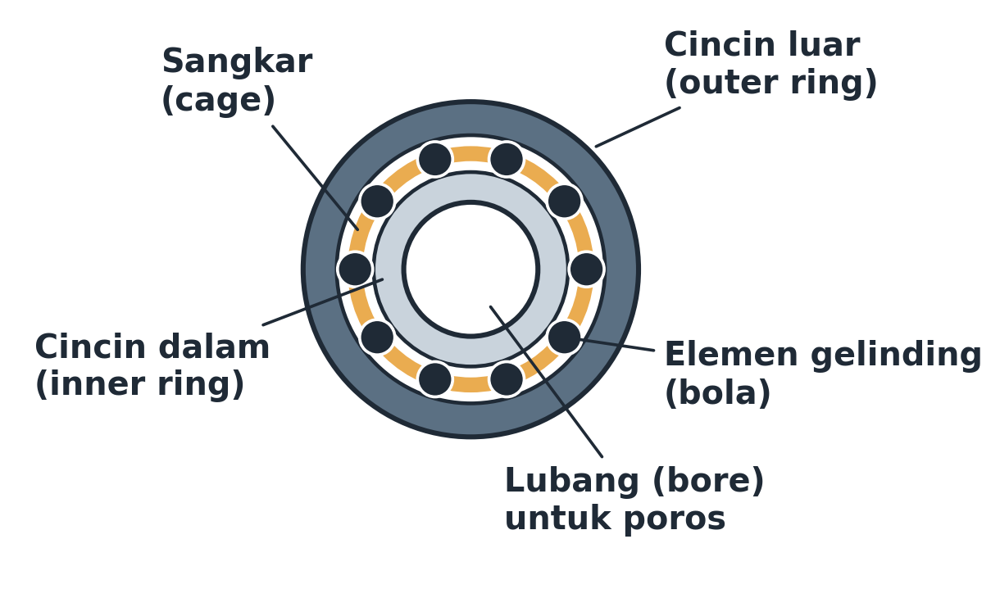

Pertemuan 9–10 · Sub-CPMK 3.2 · Jenis, kode, pemilihan + umur UCP205

Poros Ø25 → UCP205, C=14,0 kN, RA=648 N=0,648 kN, n=720 rpm, fw=1,2, target 20.000 jam: P=1,2×0,648=0,78 kN; L10=(14/0,78)³=5.825 juta putaran; Lh=5.825×10⁶/(60×720)=134.800 jam ≫ 20.000 ✓. Ukuran ditentukan diameter poros, bukan beban. Bantalan B (RB=137 N) jauh lebih ringan.
Studi kasus PPT: kipas/motor kecil → 2RS; naf roda → tirus berpasangan; gearbox lurus → rol silinder + bola pengunci; konveyor melendut → spherical/self-aligning.
Mengapa syarat bantalan berupa umur, bukan n?
Beban P naik 2× → umur bola menjadi berapa bagian? Mengapa?
Disusun dari 8 PPT kuliah + RPS Desain Komponen Mesin (3MES40016), Prodi Pendidikan Teknik Mesin FT Unimed. Rujukan: Shigley et al. (2015), Mott (2018), Juvinall & Marshek (2020), Sularso & Suga (2004).